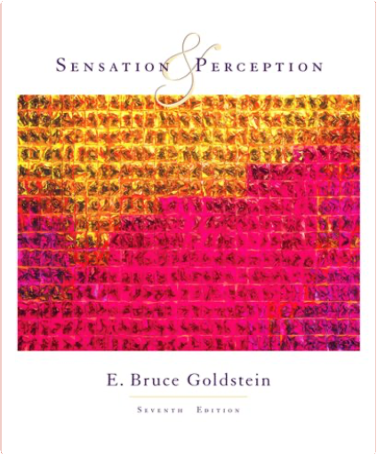

The Pan Dictionary of MathematicsCarol Gibson  Explains over 1500 of the most important and commonly used mathematical terms - including those recently coined in fields such as computer graphics, artificial intelligence and robotics. Coverage is not confined to theoretical aspects of mathematics, and includes banking and cartography.  Designed for introductory undergraduate courses in psycholinguistics, this textbook is written in an easygoing manner which is neither too technical or intimidating to the beginning student. The text does not assume extensive background in linguistics, psychology or cognitive science, and includes all major extensions of the field. The collaborative authorship of eminent psycholinguists Berko Gleason and Bernstein Ratner assures the best possible coverage of these diverse topics. Features: * Chapter 2 has updated popular coverage of brain imaging and language processing. * Chapters 6 and 7 illustrate the dynamics of understanding language in context and the process of generating sentences. * The instructor's manual includes exercises, instructional activities, and handouts which demonstrate important material in the text. * The accompanying audio stimulus tape provides examples of difficult concepts such as speech intelligibility, categorical perception, click location and memory for words and sentences to encourage class participation. New to this edition: * Basic linguistic theory and terminology is covered more in detail and the research is thoroughly updated. * Chapter 6, Sentences Combined: Text and Discourse addresses a wider range of discourse processing, including mental models, text representation and memory, and connecting sentences in discourse. * Something to Think About questions stimulate students' critical thinking. * Each chapter contains mini-experiments designed to support students' grasp of material covered in the chapter.  All books are shipped from Austria!  This is the compelling story about a group of very ordinary small boys marooned on a coral island. At first it seems as though it is all going to be great fun; but the fun before long becomes furious and life on the island turns into a nightmare of panic and death. As ordinary standards of behaviour collapse, the whole world the boys know collapses with them - the world of cricket, homework and adventure stories - and another world is revealed beneath, primitive and terrible.  Beautiful, flaxen-haired Buttercup has fallen for Westley, the farm boy, and when he departs to make his fortune, she vows never to love another. So when she hears that his ship has been captured by the Dread Pirate Roberts - who never leaves survivors - her heart is broken. But her charms draw the attention of the relentless Prince Humperdinck who wants a wife and will go to any lengths to have Buttercup. So starts a fairytale like no other, of fencing, fighting, torture, poison, true love, hate, revenge, giants, hunters, bad men, good men, beautifulest ladies, snakes, spiders, beasts, chases, escapes, lies, truths, passion and miracles.  Sensation and PerceptionE. Bruce Goldstein Helping you understand how you perceive what's around you-the wonder of seeing a face, hearing music, and smelling a rose-is what Goldstein's SENSATION AND PERCEPTION is all about. Writing clearly and using vivid full-color illustrations to clarify concepts, Goldstein shows you the importance of perception to your life. This textbook includes the latest breakthroughs in research and offers chapter-by-chapter correlation with online and multimedia resources that help you make the most of your study time. "Test Yourself" questions and "Think About It" exercises help you review and retain the material. The accompanying, "Virtual Lab" media exercises (available both on CD-ROM and online through the CengageNOW student tutorial platform) offer many animations and examples that clarify difficult concepts. |  Christopher is 15 and lives in Swindon with his father. He has Asperger's Syndrome, a form of autism. He is obsessed with maths, science and Sherlock Holmes but finds it hard to understand other people. When he discovers a dead dog on a neighbour's lawn he decides to solve the mystery and write a detective thriller about it. As in all good detective stories, however, the more he unearths, the deeper the mystery gets - for both Christopher and the rest of his family.  Finally, an interactive website based on activities you do every day! The new Halliday/Resnick/Walker 7e eGrade Plus program provides the value-added support that instructors and students want and need. Powered by Wiley's EduGen system, this site includes a vast array of high-quality content including: Homework Management: An Assignment tool allows instructors to create student homework and quizzes, using dynamic versions of end-of-chapter problems from Fundamentals of Physics or their own dynamic questions. Instructors may also assign readings, activities, and other work for students to complete. A Gradebook automatically grades and records student assignments. This not only saves time, but also provides students with immediate feedback on their work. Each student can view his or her results from past assignments at any time. An Administration tool allows instructors to manage their class rosters on-line. A Prepare and Present tool contains a variety of the Wiley-provided resources (including all the book illustrations, Java applets, and digitized video) to help make preparation time more efficient. This content may easily be adapted, customized, and supplemented by instructors to meet the needs of each course. Self-Assessment. A Study and Practice area links directly to the multimedia version of Fundamental of Physics, allowing students to review the text while they study and complete homework assignments. In addition to the complete on-line text, students can also access the Student Solutions Manual, the Student Study Guide, interactive simulations, and the Interactive LearningWare Program. Interactive LearningWare. Interactive LearningWare leads the student step-by-step through solutions to 200 of the end-of-chapter problems from the text. And there's lots more! You'll need to see it to believe it. Check out the Halliday/Resnick/Walker site at: www wiley.com/college/halliday Fundamentals of Physics, Part 2David Halliday, Robert Resnick, Jearl Walker paperback book  Create your own teaching and learning environment using eGrade Plus with EduGen. Finally, an interactive website based on activities you do every day! The new Halliday/Resnick/Walker 7/e eGrade Plus program provides the value added support that instructors and students want and need. Powered by Wiley's EduGen system, this site includes a vast array of high quality content including: Homework Management. An Assignment tool allows instructors to create student homework and quizzes, using dynamic versions of end of chapter problems from Fundamentals of Physics or their own dynamic questions. Instructors may also assign readings, activities, and other work for students to complete. A Gradebook automatically grades and records student assignments. This not only saves time, but also provides students with immediate feedback on their work. Each student can view his or her results from past assignments at any time. An Administration tool allows instructors to manage their class rosters on line. A Prepare and Present tool contains a variety of the "Wiley" provided resources (including all the book illustrations, java applets, and digitized video) to help make preparation time more efficient. This content may easily be adapted, customized, and supplemented by instructors to meet the needs of each course. A Study and practice area links directly to the multimedia version of "Fundamental of Physics", allowing students to review the text while they study and complete homework assignments. In addition to the complete on line text, students can also access the Student Solutions Manual, the Student Study Guide, interactive simulations, and the Interactive LearningWare Program. Interactive LearningWare leads the student step by step through solutions to 200 of the end of chapter problems from the text. And there's lots more! You'll need to see it to believe it. Check out the Halliday/Resnick/Walker site.  Finally, an interactive website based on activities you do every day! The new Halliday/Resnick/Walker 7/e eGrade Plus program provides the value—added support that instructors and students want and need. Powered by Wiley's EduGen system, this site includes a vase array of high—quality content including: Homework Management: An Assignment tool allows instructors to create student homework and quizzes, using dynamic versions of end—of—chapter problems from Fundamentals of Physics or their own dynamic questions. Instructors may also assign readings, activities, and other work for students to complete. A Gradebook automatically grades and records student assignments. This not only saves time, but also provides students with immediate feedback on their work. Each student can view his or her results from past assignments at any time. An Administration tool allows instructors to manage their class rosters on—line. A Prepare and Present tool contains a variety of the Wiley—provided resources (including all the book illustrations, java applets, and digitized video) to help make preparation time more efficient. This content may easily be adapted, customized, and supplemented by instructors to meet the needs of each course. Self—Assessment. A Study and Practice area links directly to the multimedia version of Fundamentals of Physics, allowing students to review the text while they study and complete homework assignments. In addition to the complete on—line text, students can also access the Student Solutions Manual, the Student Study Guide, interactive simulations, and the Interactive LearningWare Program. Interactive LearningWare. Interactive LearningWarew leads the student step—by—step through solutions to 200 of the end—of—chapter problems from the text. And there's lots more! You'll need to see it to believe it. Check out the Halliday/Resnick/Walker site at: www wiley.com/college/halliday Fundamentals of Physics, Part 5David Halliday, Robert Resnick, Jearl Walker Finally, an interactive website based on activities you do every day! The new Halliday/Resnick/Walker 7e eGrade Plus program provides the value added support that instructors and students want and need. Powered by Wiley's EduGen system, this site includes a vast array of high quality content including: Homework Management: an assignment tool allows instructors to create student homework and quizzes, using dynamic versions of end of chapter problems from Fundamentals of Physics or their own dynamic questions; instructors may also assign readings, activities, and other work for students to complete; and a gradebook automatically grades and records student assignments. This not only saves time, but also provides students with immediate feedback on their work. Each student can view his or her results from past assignments at any time. An Administration tool allows instructors to manage their class rosters on line. A Prepare and Present tool contains a variety of the Wiley provided resources (including all the book illustrations, Java applets, and digitized video) to help make preparation time more efficient. This content may easily be adapted, customized, and supplemented by instructors to meet the needs of each course. Self Assessment: A Study and Practice area links directly to the multimedia version of "Fundamental of Physics", allowing students to review the text while they study and complete homework assignments. In addition to the complete on line text, students can also access the Student Solutions Manual, the Student Study Guide, interactive simulations, and the Interactive LearningWare Program. The Interactive LearningWare leads the student step by step through solutions to 200 of the end of chapter problems from the text. And there's lots more! You'll need to see it to believe it. |

Doddridge Library
Collection Total:
417 Items
417 Items
Last Updated:
Apr 21, 2020
Apr 21, 2020
 Made with Delicious Library
Made with Delicious Library